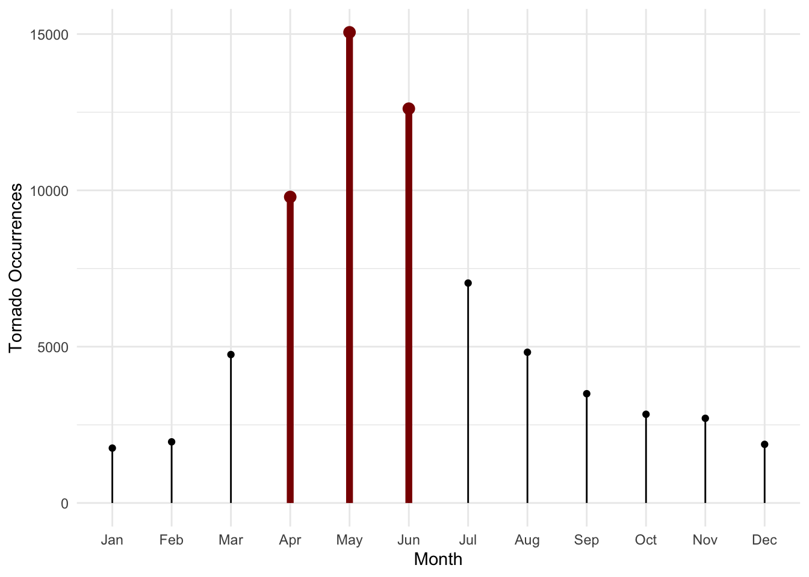

These data come from NOAA’s National Weather Service Storm Prediction Center. This data set consists of 27 different variables describing each observed tornado instance (68,693 total observations) in the United States from 1950 to 2022. I found this data set from tidytuesday on GitHub from the following URL: https://github.com/rfordatascience/tidytuesday/blob/master/data/2023/2023-05-16/readme.md.
Questions of Interest
How do total tornado occurrences vary within the United States - which state has seen the most tornadoes over the last 72 years?
How has the occurrence of extreme tornadoes (>3F) changed over the last 72 years?
In which months are tornadoes most common?
Variables of Interest
yr: year of tornado occurrence
mo: month of tornado occurrence
st: two-letter abbreviation for the state
mag: tornado magnitude on the Fujita Scale (0F-5F)
# A tibble: 6 × 27
om yr mo dy date time tz datetime_utc st stf
<dbl> <dbl> <dbl> <dbl> <date> <tim> <chr> <dttm> <chr> <dbl>
1 192 1950 10 1 1950-10-01 21:00 Amer… 1950-10-02 03:00:00 OK 40
2 193 1950 10 9 1950-10-09 02:15 Amer… 1950-10-09 08:15:00 NC 37
3 195 1950 11 20 1950-11-20 02:20 Amer… 1950-11-20 08:20:00 KY 21
4 196 1950 11 20 1950-11-20 04:00 Amer… 1950-11-20 10:00:00 KY 21
5 197 1950 11 20 1950-11-20 07:30 Amer… 1950-11-20 13:30:00 MS 28
6 194 1950 11 4 1950-11-04 17:00 Amer… 1950-11-04 23:00:00 PA 42
# ℹ 17 more variables: mag <dbl>, inj <dbl>, fat <dbl>, loss <dbl>, slat <dbl>,
# slon <dbl>, elat <dbl>, elon <dbl>, len <dbl>, wid <dbl>, ns <dbl>,
# sn <dbl>, f1 <dbl>, f2 <dbl>, f3 <dbl>, f4 <dbl>, fc <lgl>
How do total tornado occurrances vary within the United States - which state has seen the most tornadoes over the past 72 years?
state_df <-map_data("state")state_abbrev = state_df |>mutate(state =case_when(region =="alabama"~"AL", region =="alaska"~"AK", region =="arizona"~"AZ", region =="arkansas"~"AR", region =="california"~"CA", region =="colorado"~"CO", region =="connecticut"~"CT", region =="delaware"~"DE", region =="florida"~"FL", region =="georgia"~"GA", region =="hawaii"~"HI", region =="idaho"~"ID", region =="illinois"~"IL", region =="indiana"~"IN", region =="iowa"~"IA", region =="kansas"~"KS", region =="kentucky"~"KY", region =="louisiana"~"LA", region =="maine"~"ME", region =="maryland"~"MD", region =="massachusetts"~"MA", region =="michigan"~"MI", region =="minnesota"~"MN", region =="mississippi"~"MS", region =="missouri"~"MO", region =="montana"~"MT", region =="nebraska"~"NE", region =="nevada"~"NV", region =="new hampshire"~"NH", region =="new jersey"~"NJ", region =="new mexico"~"NM", region =="new york"~"NY", region =="north carolina"~"NC", region =="north dakota"~"ND", region =="ohio"~"OH", region =="oklahoma"~"OK", region =="oregon"~"OR", region =="pennsylvania"~"PA", region =="rhode island"~"RI", region =="south carolina"~"SC", region =="south dakota"~"SD", region =="tennessee"~"TN", region =="texas"~"TX", region =="utah"~"UT", region =="vermont"~"VT", region =="virginia"~"VA", region =="washington"~"WA", region =="west virginia"~"WV", region =="wisconsin"~"WI", region =="wyoming"~"WY",TRUE~NA_character_))tornadoes_summary = tornadoes |>group_by(st) |>summarise(total_tornadoes =n(),mean_magnitude =mean(mag),mean_injuries =mean(inj),mean_fatalities =mean(fat),mean_property_loss =mean(loss),mean_length =mean(len),mean_width =mean(wid))state_tornadoes =left_join(state_abbrev, tornadoes_summary, by =c("state"="st"))map_totaltornadoes =ggplot(data = state_tornadoes,mapping =aes(x = long, y = lat,group = group)) +geom_polygon(colour ="black", aes(fill = total_tornadoes)) +coord_map(projection ="albers", lat0 =39, lat1 =45) +theme_void() +scale_fill_distiller(palette ="Reds", direction =0.5)map_totaltornadoes
Visual Takeaways: This is a map of the United States, colored by total tornado instances over the past 72 years. Texas stands out as having a significantly higher number of tornadoes than the rest of the country. This may be surprising, as one might expect either Kansas or Oklahoma to take the top spot (while those two states appear to be coming in the second and third most tornadoes). One possible explanation is that Texas is significantly larger in terms of pure land area. One visible trend is “tornado alley” through the center of the United States from Texas through South Dakota (including eastern Colorado). Florida is also an interesting case, having a similar number of tornadoes to states in tornado alley. This makes sense because tornadoes often occur during other severe storm events such as thunderstorms, tropical storms, and hurricanes.
How has the occurrence of extreme tornadoes (>3F) changed over the last 72 years?
Visual Takeaways: There doesn’t appear to be any strong trend in extreme tornadoes in the United States. The trend for severe (3F: 158-206 mph), devastating (4F: 207-260 mph), and incredible (5F: 261-318 mph) tornadoes seems to be random and relatively unpredictable. With increasing instability in the environment due to global climate change, I expected to see an increase in more intense tornadoes from 1950 to 2022. For severe tornadoes, however, there has been a slight overall decrease in occurrences over time.
In which months are tornadoes most common?
month_tornado = tornadoes |>group_by(mo) |>summarise(Month_totals =n()) |>mutate(Month =case_when(mo ==1~"Jan", mo ==2~"Feb", mo ==3~"Mar", mo ==4~"Apr", mo ==5~"May", mo ==6~"Jun", mo ==7~"Jul", mo ==8~"Aug", mo ==9~"Sep", mo ==10~"Oct", mo ==11~"Nov", mo ==12~"Dec")) |>mutate(Month =as.factor(x = Month),Month =fct_reorder(Month, mo))top_3 = month_tornado |>filter(Month %in%c("Apr", "May", "Jun"))ggplot(data = month_tornado, aes(x = Month, y = Month_totals)) +geom_segment(aes(xend = Month, y =0, yend = Month_totals)) +geom_point() +geom_segment(data = top_3, aes(xend = Month, y =0, yend = Month_totals), col ="darkred", linewidth =2) +geom_point(data = top_3, col ="darkred", size =3) +labs(y ="Tornado Occurrences") +theme_minimal()

Visual Takeaway: The most tornadoes occur during the start of summer - particularly April, May, and June. These three months seem significantly higher than the rest, which makes sense due to the typical atmospheric conditions that exist during this time. The introduction of more warm, moist air, combined with cooler, dry air causes instability in the lower atmosphere. The dryness of the winter months lead to lower instances of tornadoes in the United States.
Conclusion
In particular for the map of total tornadoes, I could standardize the values with respect to tornadoes per state land area so that the massive area of Texas doesn’t stand out as much in the visualization. If I did it this way, I would likely see a change in colors in the map with likely higher values in states like Oklahoma and Kansas. In terms of the line plot for extreme tornadoes over time, the plot is a bit underwhelming. This is likely because of the lack of striking trend that we see in the other two figures.
If I had more time to work with these data, I would try to explore relationships involving tornado size (length and width) and magnitude with property losses and injuries/fatalities. I think it would be interesting to see if I could make a model that predicts either property loss or injuries/fatalities using tornado size and magnitude as well as time of day. The datetime_utc variable could also be used to view the data as a time series.
Connection to Class Ideas
These visuals effectively communicate information about tornado data in the United States by incorporating color, cleanliness, and organization to appeal to the reader’s visual senses. In terms of human perception, changes in color are much easier to distinguish than changes in shape, so I made sure to use color that grabs the reader’s attention whenever applicable. For the map of the United States, I used a sequential, continuous color scale to represent the total number of tornado occurrences per state. This color scale is ideal for representing this type of data because it allows for a quick, effective interpretation of the intended results. Finally, I tried to maximize data-to-ink ratio as much as possible to ensure the reader’s attention was in the right place and not distracted by any superfluous detail.